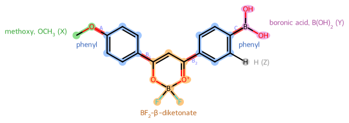

Methoxy chelate in acetonitrile
Giovanni Gravili ![]()
Abstract
Minima, twist scans and torsion map of the methoxy chelate \mathbf{1} in acetonitrile, the control whose donor is not expected to twist in the excited state.
Keywords
TICT, difluoroboron chelate, relaxed scan, charge transfer
NotePrepared
- The calculations are prepared and none is submitted.

Calculations
Every calculation of this workflow, grouped as in the diagram. A scan’s runs are on the scan’s page. Select a calculation to open its page.
---
config:
markdownAutoWrap: false
themeVariables:
fontSize: 13px
primaryColor: '#ffffff'
primaryBorderColor: '#adb5bd'
primaryTextColor: '#212529'
lineColor: '#6c757d'
clusterBkg: '#f8f9fa'
clusterBorder: '#dee2e6'
titleColor: '#212529'
edgeLabelBackground: '#ffffff'
themeCSS: '.nodeLabel, .nodeLabel p { white-space: nowrap !important; }
.nodeLabel a { display: inline-flex; align-items: baseline; white-space: nowrap; gap: 0.25em; }
.nodeLabel math { display: inline math !important; math-style: compact; }
.nodeLabel .katex-display { display: inline; margin: 0; }
'
theme: base
flowchart:
useMaxWidth: false
defaultRenderer: elk
rankSpacing: 24
nodeSpacing: 24
diagramPadding: 8
curve: rounded
layout: elk
---
flowchart TB
Start1(( ))
subgraph Chelate1["<span>Methoxy chelate ($$\mathbf{1}$$)</span>"]
%% description: Each calculation of the control chelate, from its two minima to the scans and the map.
direction TB
Input1[/"<span>Molecular-screening geometry of $$\mathbf{1}$$</span>"/]
S0Opt1["<a href='2026-11-13_115811/'>Optimize and verify $$S_0$$ of $$\mathbf{1}$$</a>"]
S0Props1["<a href='2026-11-13_115812/'>Absorption properties at the $$S_0$$ minimum of $$\mathbf{1}$$</a>"]
S1Opt1["<a href='2026-11-13_115813/'>Optimize and verify $$S_1$$ of $$\mathbf{1}$$</a>"]
S1Props1["<a href='2026-11-13_115814/'>Emission properties at the $$S_1$$ minimum of $$\mathbf{1}$$</a>"]
S0ScanB11["<a href='2026-11-13_115815/'>Relaxed $$S_0$$ scan of $$\theta_{\mathrm{B}_1}$$ of $$\mathbf{1}$$</a>"]
S0ScanB1Td1["<a href='2026-11-13_115816/'>Vertical excitations along the $$S_0$$ scan of $$\theta_{\mathrm{B}_1}$$ of $$\mathbf{1}$$</a>"]
S1ScanB11["<a href='2026-11-13_115817/'>Relaxed $$S_1$$ scan of $$\theta_{\mathrm{B}_1}$$ of $$\mathbf{1}$$</a>"]
S0ScanA1["<a href='2026-11-13_115818/'>Relaxed $$S_0$$ scan of $$\theta_\mathrm{A}$$ of $$\mathbf{1}$$</a>"]
S0ScanATd1["<a href='2026-11-13_115819/'>Vertical excitations along the $$S_0$$ scan of $$\theta_\mathrm{A}$$ of $$\mathbf{1}$$</a>"]
S1ScanA1["<a href='2026-11-13_115820/'>Relaxed $$S_1$$ scan of $$\theta_\mathrm{A}$$ of $$\mathbf{1}$$</a>"]
S0Map1["<a href='2026-11-13_115821/'>Relaxed $$S_0$$ map of $$\theta_\mathrm{A}$$ and $$\theta_{\mathrm{B}_1}$$ of $$\mathbf{1}$$</a>"]
S0MapTd1["<a href='2026-11-13_115822/'>Vertical excitations over the $$S_0$$ map of $$\mathbf{1}$$</a>"]
Output1[/"<span>$$E(\theta)$$, $$\Delta\mu$$ and charge transfer of $$\mathbf{1}$$</span>"/]
end
End1((( )))
Start1 --> Input1
Input1 --> S0Opt1
S0Opt1 --> S0Props1
S0Opt1 --> S1Opt1
S1Opt1 --> S1Props1
S0Opt1 --> S0ScanB11
S0ScanB11 --> S0ScanB1Td1
S1Opt1 --> S1ScanB11
S0Opt1 --> S0ScanA1
S0ScanA1 --> S0ScanATd1
S1Opt1 --> S1ScanA1
S0Opt1 --> S0Map1
S0Map1 --> S0MapTd1
S0Props1 --> Output1
S1Props1 --> Output1
S0ScanB1Td1 --> Output1
S1ScanB11 --> Output1
S0ScanATd1 --> Output1
S1ScanA1 --> Output1
S0MapTd1 --> Output1
Output1 --> End1
classDef pending stroke:#adb5bd,stroke-width:2px;
classDef running stroke:#0d6efd,stroke-width:2px;
classDef verification stroke-dasharray:5 5;
classDef success stroke:#198754,stroke-width:2px;
classDef failed stroke:#dc3545,stroke-width:2px;
classDef problems stroke:#e0a800,stroke-width:2px;
class Start1,Input1,S0Opt1,S0Props1,S1Opt1,S1Props1,S0ScanB11,S0ScanB1Td1,S1ScanB11,S0ScanA1,S0ScanATd1,S1ScanA1,S0Map1,S0MapTd1,Output1,End1 pending;
linkStyle 0 stroke:#adb5bd,color:#adb5bd,stroke-width:2px;
linkStyle 1 stroke:#adb5bd,color:#adb5bd,stroke-width:2px;
linkStyle 2 stroke:#adb5bd,color:#adb5bd,stroke-width:2px;
linkStyle 3 stroke:#adb5bd,color:#adb5bd,stroke-width:2px;
linkStyle 4 stroke:#adb5bd,color:#adb5bd,stroke-width:2px;
linkStyle 5 stroke:#adb5bd,color:#adb5bd,stroke-width:2px;
linkStyle 6 stroke:#adb5bd,color:#adb5bd,stroke-width:2px;
linkStyle 7 stroke:#adb5bd,color:#adb5bd,stroke-width:2px;
linkStyle 8 stroke:#adb5bd,color:#adb5bd,stroke-width:2px;
linkStyle 9 stroke:#adb5bd,color:#adb5bd,stroke-width:2px;
linkStyle 10 stroke:#adb5bd,color:#adb5bd,stroke-width:2px;
linkStyle 11 stroke:#adb5bd,color:#adb5bd,stroke-width:2px;
linkStyle 12 stroke:#adb5bd,color:#adb5bd,stroke-width:2px;
linkStyle 13 stroke:#adb5bd,color:#adb5bd,stroke-width:2px;
linkStyle 14 stroke:#adb5bd,color:#adb5bd,stroke-width:2px;
linkStyle 15 stroke:#adb5bd,color:#adb5bd,stroke-width:2px;
linkStyle 16 stroke:#adb5bd,color:#adb5bd,stroke-width:2px;
linkStyle 17 stroke:#adb5bd,color:#adb5bd,stroke-width:2px;
linkStyle 18 stroke:#adb5bd,color:#adb5bd,stroke-width:2px;
linkStyle 19 stroke:#adb5bd,color:#adb5bd,stroke-width:2px;
linkStyle 20 stroke:#adb5bd,color:#adb5bd,stroke-width:2px;
Methoxy chelate (\mathbf{1})
Each calculation of the control chelate, from its two minima to the scans and the map.
| Status | Calculation | Program | Job | Calculation started | Wall time |
|---|---|---|---|---|---|
 |
Optimize and verify S_0 of \mathbf{1} | Gaussian | Opt, Freq; Stable | ||
|
Absorption properties at the S_0 minimum of \mathbf{1} | Gaussian | SP; SP (TD); SP | ||
|
Optimize and verify S_1 of \mathbf{1} | Gaussian | Opt (TD), Freq (TD) | ||
|
Emission properties at the S_1 minimum of \mathbf{1} | Gaussian | SP; SP (TD); SP | ||
|
Relaxed S_0 scan of \theta_{\mathrm{B}_1} of \mathbf{1} | Gaussian | Opt | ||
|
Vertical excitations along the S_0 scan of \theta_{\mathrm{B}_1} of \mathbf{1} | Gaussian | SP (TD) | ||
|
Relaxed S_1 scan of \theta_{\mathrm{B}_1} of \mathbf{1} | Gaussian | Opt (TD) | ||
|
Relaxed S_0 scan of \theta_\mathrm{A} of \mathbf{1} | Gaussian | Opt | ||
|
Vertical excitations along the S_0 scan of \theta_\mathrm{A} of \mathbf{1} | Gaussian | SP (TD) | ||
|
Relaxed S_1 scan of \theta_\mathrm{A} of \mathbf{1} | Gaussian | Opt (TD) | ||
|
Relaxed S_0 map of \theta_\mathrm{A} and \theta_{\mathrm{B}_1} of \mathbf{1} | Gaussian | Opt | ||
|
Vertical excitations over the S_0 map of \mathbf{1} | Gaussian | SP (TD) |
NotePrepared
- This run has been prepared but not submitted, so it has no outcome yet.
NotePrepared
- This run has been prepared but not submitted, so it has no outcome yet.
NotePrepared
- This run has been prepared but not submitted, so it has no outcome yet.
NotePrepared
- This run has been prepared but not submitted, so it has no outcome yet.
NotePrepared
- This run has been prepared but not submitted, so it has no outcome yet.
NotePrepared
- This run has been prepared but not submitted, so it has no outcome yet.
NotePrepared
- This run has been prepared but not submitted, so it has no outcome yet.
NotePrepared
- This run has been prepared but not submitted, so it has no outcome yet.
NotePrepared
- This run has been prepared but not submitted, so it has no outcome yet.
NotePrepared
- This run has been prepared but not submitted, so it has no outcome yet.
NotePrepared
- This run has been prepared but not submitted, so it has no outcome yet.
NotePrepared
- This run has been prepared but not submitted, so it has no outcome yet.
NotePrepared
- 12 calculations are prepared and none is submitted.
- The chelate has its two minima with their state properties, relaxed scans of both twists in both states and a relaxed torsion map.
Dimethylamino chelate (\mathbf{3})
The TICT candidate’s calculations: where its donor and phenyl bonds turn, in the ground and the excited state.
| Status | Calculation | Program | Job | Calculation started | Wall time |
|---|---|---|---|---|---|
|
Optimize and verify S_0 of \mathbf{3} | Gaussian | Opt, Freq; Stable | ||
|
Absorption properties at the S_0 minimum of \mathbf{3} | Gaussian | SP; SP (TD); SP | ||
|
Optimize and verify S_1 of \mathbf{3} | Gaussian | Opt (TD), Freq (TD) | ||
|
Emission properties at the S_1 minimum of \mathbf{3} | Gaussian | SP; SP (TD); SP | ||
|
Relaxed S_0 scan of \theta_{\mathrm{B}_1} of \mathbf{3} | Gaussian | Opt | ||
|
Vertical excitations along the S_0 scan of \theta_{\mathrm{B}_1} of \mathbf{3} | Gaussian | SP (TD) | ||
|
Relaxed S_1 scan of \theta_{\mathrm{B}_1} of \mathbf{3} | Gaussian | Opt (TD) | ||
|
Relaxed S_0 scan of \theta_\mathrm{A} of \mathbf{3} | Gaussian | Opt | ||
|
Vertical excitations along the S_0 scan of \theta_\mathrm{A} of \mathbf{3} | Gaussian | SP (TD) | ||
|
Relaxed S_1 scan of \theta_\mathrm{A} of \mathbf{3} | Gaussian | Opt (TD) | ||
|
Relaxed S_0 map of \theta_\mathrm{A} and \theta_{\mathrm{B}_1} of \mathbf{3} | Gaussian | Opt | ||
|
Vertical excitations over the S_0 map of \mathbf{3} | Gaussian | SP (TD) |